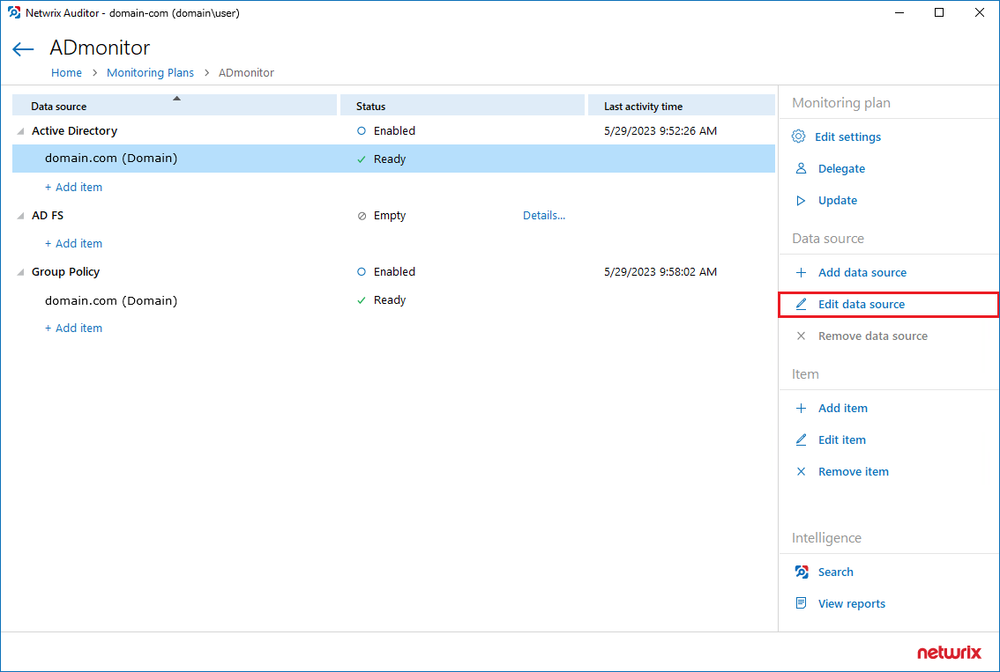
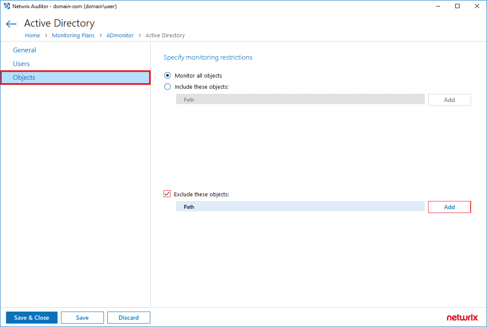

IMPORTANT: Netwrix Auditor is licensed per enabled AD user object. For additional information on determining the number of enabled Auditor accounts, refer to the following article: How to Determine the Number of Enabled User Accounts. Auditor only collects data from objects that are not excluded (omitted), which means that any objects that are omitted will not be monitored.
Question
How can the number of used Active Directory (AD) licenses be reduced in Auditor?
Answer
Refer to the following options to reduce the count of used AD licenses:
Disable the User Objects
Auditor is licensed based on the number of enabled user objects in the AD. Disabled user objects are still tracked for changes, but they do not count towards the license count. Refer to the following steps to view a list of all enabled users:
-
In the main Auditor screen, select Reports > Predefined > Active Directory > Active Directory—State-in-Time > User Accounts.
-
In the filters section, switch the Status filter to Enabled to get a full list of enabled users. Click View Report to update the report.
TIP: Switch the Sort By filter to Name to sort the list by the organizational unit (OU).
Review the list to determine if any accounts should be disabled.
NOTE: No further actions are required after you disable the user objects—Auditor reviews the used AD license count on data collection.
Exclude OUs and User Objects via the Auditor UI
Refer to the following steps to exclude OUs and user objects from the monitoring scope via the Auditor UI to reduce the used license count:
-
In the main Auditor menu, click Monitoring Plans.
- Select the relevant AD monitoring plan and click Edit.
-
Select the data source and click Edit data source.
 -
In the left pane, select the Objects tab. Select the Exclude these objects checkbox, then click Add to exclude objects from the monitoring scope. After adding the objects, click Save & Close.

Refer to the following examples to learn about how the exclusion rules work for Objects. The same logic applies to the inclusion rules:
-
domain.local/OUwill exclude the OU itself. However, objects within this OU will not be excluded. -
domain.local/OU/*will exclude objects within the OU. However, the OU itself will not be excluded. -
domain.local/OU*will exclude the OU itself, all objects within it, and also all objects whose path begins withdomain.local/OU(likedomain.local/OU_HQ).
Exclude an OU via the Omit List
Populate the omitpathlist.txt omit list with the OU you would like to
omit. Use the exclusion rules provided above. For additional information on AD omit
lists, refer to the following article:
Active Directory — Active Directory Monitoring Scope · v10.6.
Exclude Entra ID Users via the OmitUPNlist.txt File
To exclude specific Entra ID users from the license count, populate the
omitUPNlist.txt file with the user principal names (UPNs) of the users
you want to omit. Follow these steps:
-
Locate the
omitUPNlist.txtfile in the installation directory of Netwrix Access Analyzer. - Edit the file and add the UPNs of the users you want to exclude using the following XML format:
<EntraIdServiceAccounts>
<Users>
<!--<User Name="John@nwxcorp.onmicrosoft.com" />-->
<!--<User Name="Bob@nwxcorp.onmicrosoft.com" />-->
</Users>
</EntraIdServiceAccounts>
Ensure that the UPNs are added as comments within the XML structure as shown above.
This allows you to manage and track excluded users without affecting the XML
structure. Also, Wildcard * is supported and can replace any number of
characters.
IMPORTANT: Excluding users via the
omitUPNlist.txtfile will reduce the Entra ID user count used for licensing but will also exclude these users from monitoring. For more information, please see Microsoft Entra ID Monitoring Scope.
Tips
-
No special syntax is required for OUs with white-space characters in their names (e.g., a space).
-
Auditor updates the monitoring scope after the next scheduled state-in-time snapshot collection (next day by default). Alternatively, you can manually update your AD monitoring plan to update the monitoring scope.